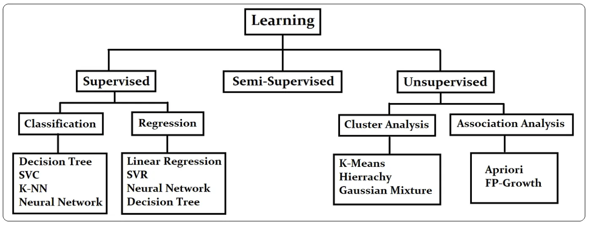

Data Preprocessing and ML Algorithm Basics
In Unit 2, we delve into the foundational concepts of machine learning, exploring key terminology and the statistical and computational perspectives of data, models, and algorithms. This includes understanding the software that embeds ML and the core principles underlying ML algorithms. We differentiate between parametric and non-parametric algorithms and examine supervised, unsupervised, and semi-supervised learning approaches. Concepts such as bias, variance, and the trade-off between them are crucial, along with discussions on overfitting and underfitting. Data preprocessing plays a central role, including descriptive statistics, normalization, discretization, and handling outliers and missing values. Tools like RapidMiner provide practical insights into working with datasets and ML functions.
Machine learning
What is ML?
Machine learning is a branch of artificial intelligence and computer science that focuses on the
using data and algorithms to enable AI to imitate the way that humans learn, gradually improving
its accuracy.
How does machine learning work?
The learning system of a machine learning algorithm into three main parts:
A Decision Process: In general, machine learning algorithms are used to make a prediction
or
classification. Based on some input data, which can be labeled or unlabeled, your algorithm will
produce an estimate about a pattern in the data.
An Error Function: An error function evaluates the prediction of the model. If there are
known
examples, an error function can make a comparison to assess the accuracy of the model.
A Model Optimization Process: If the model can fit better to the data points in the
training
set, then weights are adjusted to reduce the discrepancy between the known example and the model
estimate. The algorithm will repeat this iterative “evaluate and optimize” process, updating
weights autonomously until a threshold of accuracy has been met.
Mathematical Statistics vs Computer Statistics
Mathematical Statistics
As the name suggests, mathematical statistics focuses on the application of mathematical
principles to understand the theoretical properties of statistical techniques.
By analyzing these properties, we can assess the strengths and weaknesses of different methods,
which is crucial when selecting the appropriate technique for a specific practical problem.
Moreover, mathematical statistics provides a solid foundation for the development of new
statistical methods.
Computer Statistics
Computational statistics addresses problems that mathematical statistics alone cannot solve,
particularly when closed-form solutions are unavailable or too complex to derive.
In such cases, computational techniques, such as numerical methods or simulations, are employed
to find approximate solutions.
For example, in linear regression analysis, computational approaches may be used to optimize
model parameters when an analytical solution is not feasible.
Parametric and Non-Parametric Algorithms
Parametric Methods
Parametric methods are statistical techniques that rely on specific assumptions about the
underlying distribution of the population being studied.
These methods typically assume that the data follows a known Probability distribution, such as
the normal distribution, and estimate the parameters of this distribution using the available
data.
The basic idea behind the Parametric method is that there is a set of fixed parameters that are
used to determine a probability model that is used in ML as well.
Parametric methods are those methods for which we priory know that the population is normal, or
if not then we can easily approximate it using a Normal Distribution.
Nonparametric methods
Nonparametric methods are statistical techniques that do not rely on specific assumptions about
the underlying distribution of the population being studied, often referred to as
"distribution-free" methods. Nonparametric methods does not make assumptions. This flexibility
allows nonparametric techniques to be used in a wide range of situations, particularly when
there is little knowledge about the population's distribution.
These methods are becoming increasingly popular due to several advantages.
Firstly, they require fewer assumptions about the population, making them more robust in cases
where the underlying distribution is unknown or difficult to define.
Secondly, they are often easier to apply and understand, as many nonparametric techniques are
simpler and less computationally intensive than their parametric counterparts.
However, nonparametric methods still require some assumptions. The data points must be
independent, meaning one observation should not influence another. Additionally, the data should
be randomly sampled from the population and measurements must be consistent across all data
points. Despite these requirements, nonparametric methods are versatile and powerful tools in
statistical analysis.
Different types of learning

Supervised Learning
Supervised learning involves using labeled datasets, where input variables (predictors) are mapped
to output variables (targets).
The goal is to find a function that accurately predicts the target based on the input. By comparing
predictions with actual labels, the model can be adjusted to reduce errors.
Supervised learning is divided into two categories: regression, for continuous or real-valued
outputs, and classification, for categorical outputs. Appropriate algorithms are applied depending
on the problem type.
The ultimate goal is to create a model that generalizes well to new, unseen data, avoiding issues
like overfitting.
Semi-Supervised Learning
Unsupervised learning deals with unlabeled data, meaning there are no known outputs to guide the
learning process.
The challenge lies in determining when to stop learning and how to evaluate the model, as no
predictions are made.
Instead, unsupervised learning uncovers hidden patterns and structures in the data. Key areas of
application include clustering, dimensionality reduction, and association analysis. Clustering
groups similar data points, while association analysis discovers hidden relationships.
Dimensionality reduction simplifies datasets with many variables, preserving key information for
more efficient training and analysis.
Unsupervised learning is essential for exploring and understanding data without predefined labels.
Unsupervised Learning
Semi-supervised learning falls between supervised and unsupervised learning, using a mix of labeled
and
mostly unlabeled data.
Since labeling large datasets is costly and time-consuming, semi-supervised learning is useful in
real-world applications where labeled data is scarce.
The process typically starts with unsupervised learning to group data into clusters, followed by
supervised learning to predict the missing labels.
It is assumed that data points within the same cluster share similar labels, which can be assigned
through methods like voting or averaging.
This approach leverages both labeled and unlabeled data to improve learning efficiency and accuracy.
Conclusion
Supervised learning is a problem with labeled data, expecting to develop predictive capability.
Unsupervised learning is discovering process, diving into unlabeled data to capture hidden
information.
Semi-supervised learning is a blend of supervised and unsupervised learning.
Bias-Variance Trade Off
What is Bias?
The bias is known as the difference between the prediction of the values by the ML model and the
correct value.
Being high in biasing gives a large error in training as well as testing data. It recommended
that an algorithm should always be low-biased to avoid the problem of underfitting.
By high bias, the data predicted is in a straight line format, thus not fitting accurately in
the data in the data set. Such fitting is known as the Underfitting of Data.
This happens when the hypothesis is too simple or linear in nature.
Refer to the graph given below for an example of such a situation.
What is Variance?
Variance refers to the variability in a model's predictions for a given data point, indicating
how much the model's predictions fluctuate across different training sets.
A model with high variance is overly complex, fitting the training data too closely, which leads
to poor performance on new, unseen data—a phenomenon known as overfitting.
While it may perform well on the training set, such a model struggles to generalize, resulting
in high error rates on test data. Overfitting occurs when the model fits a complex curve to the
training data, capturing noise rather than the underlying pattern.
To build a good model, variance should be minimized.
Tradeoff
If the algorithm is too simple (hypothesis with linear equation) then it may be on high bias and
low variance condition and thus is error-prone.
If algorithms fit too complex (hypothesis with high degree equation) then it may be on high
variance and low bias.
In the latter condition, the new entries will not perform well. Well, there is something between
both of these conditions, known as a Trade-off or Bias Variance Trade-off.
This tradeoff in complexity is why there is a tradeoff between bias and variance. An algorithm
can’t be more complex and less complex at the same time.
For the graph, the perfect tradeoff will be like this.
Underfitting and Overfitting
Underfitting
Underfitting in Machine Learning occurs when a model is too simple to capture the underlying
patterns in the data, leading to poor performance on both the training and testing datasets. An
underfit model fails to learn from the data effectively, resulting in inaccurate predictions,
especially for new, unseen data. This often happens when the model uses overly simplified
assumptions or lacks complexity. To overcome underfitting, more complex models, better feature
representation, and reduced regularization are needed. Underfitting is characterized by high
bias and low variance, meaning the model fails to capture the data's intricacies and generalizes
poorly.
Reasons for Underfitting:
- The model is too simple for the data's complexity.
- A small training dataset.
- Excessive regularization that overly constrains the model.
- Lack of feature scaling.
Overfitting
Overfitting occurs when a model is overly complex and performs exceptionally well on training
data but fails to generalize to new, unseen data, resulting in poor predictions on the test set.
This happens when the model learns not only the patterns but also the noise and inaccuracies in
the training data, leading to high variance.
Overfitting is common with non-parametric and non-linear methods, as they have more flexibility
to fit the data, potentially creating unrealistic models.
To avoid overfitting, one can use simpler models, such as linear algorithms for linear data, or
tune parameters like the maximal depth in decision trees.
Reasons for Overfitting:
- High variance and low bias.
- Excessive model complexity.
- Insufficient training data.
Web bibliography
- https://www.ibm.com/topics/machine-learning
- https://marufsazed.medium.com/the-difference-between-mathematical-computational-and-applied-statistics-f4afaf76b76d
- https://www.geeksforgeeks.org/difference-between-parametric-and-non-parametric-methods/
- https://hshan0103.medium.com/what-is-supervised-semi-supervised-and-unsupervised-learning-12cd8160f99a
- https://www.geeksforgeeks.org/ml-bias-variance-trade-off/
- https://www.geeksforgeeks.org/underfitting-and-overfitting-in-machine-learning/
- https://codepen.io/eddyerburgh/pen/oxwXjx